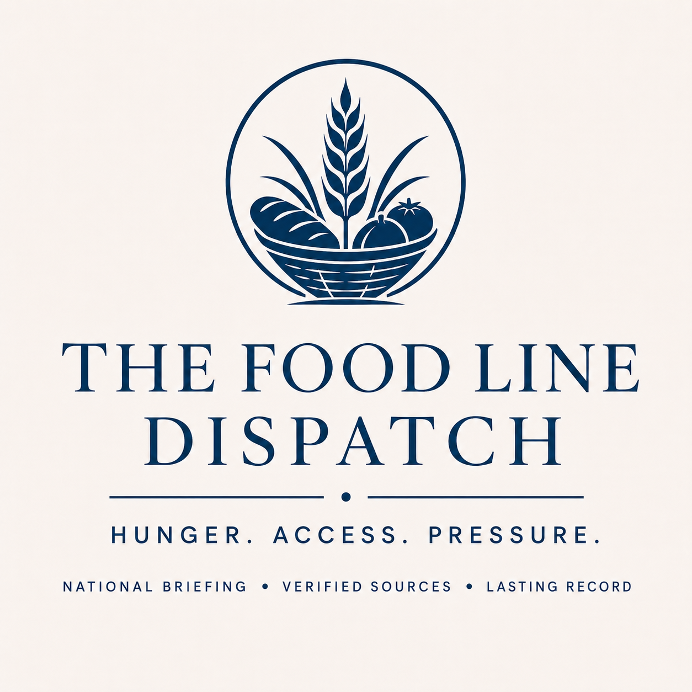

The Blue Fern Co.
Food Line Archive
Chronological archive of source-backed Food Line editions.
Latest edition
KSAT reports that Blessings in a Backpack packs weekend meals for more than 500 Boerne ISD students across 14 campuses; an organizer says rising food costs restrict nutritious purchases.
Archive
- 2026-10-15Boerne weekend-meal program reaches more than 500 students across 14 campuses
KSAT reports that Blessings in a Backpack packs weekend meals for more than 500 Boerne ISD students across 14 campuses; an organizer says rising food costs restrict nutritious purchases. - 2026-10-13Kiwanis food pantry fundraiser nears $200,000 raised over 34 years
KNOP reported a Lincoln County fundraiser is supporting the Hershey-Sutherland Food Pantry as donations and food supplies dwindle and residents adjust after Sutherland lost its grocery store. - 2026-10-12SNAP enrollment sinks to 19.8 million in June as states face higher costs and new rules
WLWT reported Tennessee SNAP enrollment fell by more than 100,000 people in less than a year, affecting SNAP households. - 2026-10-11California city backs down on $20K daily fine threat against pastor's food pantry after outpouring of support
Fox News reported San Jose officials backed down from daily fines against Lighthouse Food Rescue and said the city would help the food pantry relocate. - 2026-10-09SNAP changes continue to strain New Haven food assistance network
Yale Daily News reported rising food-assistance demand, affecting SNAP households. - 2026-10-07States report food-aid gaps as new SNAP requirements take effect
A New York Post report says new SNAP requirements have cut off or delayed food benefits for millions, leaving states to respond to food-aid gaps. - 2026-10-04As Kansans lose SNAP benefits, state lawmakers examine system hurdles
JC Post, republishing Kansas Reflector, reported fewer Kansans receiving SNAP benefits and described application delays and benefit-access hurdles under discussion by state lawmakers. - 2026-10-03Central Florida families struggle to buy groceries after losing food stamps
Orlando Sentinel reported that some Central Florida families were struggling to buy groceries after losing food-stamp benefits. - 2026-10-02PARC Kids Cafe provides after-school meals in Lafayette Parish
KLFY reported that children in Lafayette Parish experiencing food insecurity have an after-school meal option through PARC Kids Cafe. - 2026-10-01Bradford County Food Pantry running low on food, leaders say
Food Line tracks Bradford County pantry inventory pressure and a West LA senior meal-access waitlist signal. - 2026-09-30Change in store again for local food bank users
In Ladysmith, Feed My People shifted service back to twice-monthly pop-up food distributions. - 2026-09-29Massive SNAP cuts could mean more children are separated from their families
STAT reported a SNAP benefit delay in Arizona, affecting children, SNAP households, low-income households. - 2026-09-12Hawaii Island Salvation Army pantries report staple shortages after Lala
Big Island Now reported that Salvation Army food pantries in Hilo, Honokaa, and Kona needed donations because staple supplies were low after Lala-related pressure. The pantries normally distribute about 75 to 150 food bags during weekly distributions at each site, and the Hilo corps reported 20 new families seeking help. - 2026-08-31Phoenix food-box demand rose as Arizona SNAP access contracted
St. Vincent de Paul in Phoenix reported that demand for food boxes had nearly doubled as Arizona food-bank visits rose and SNAP access contracted; the sources did not establish a precise turnaway count or causal split. - 2026-08-30Broken pipe closed St. Columba pantry for restoration
St. Columba Ecumenical Ministries said a broken pipe forced its Norfolk food pantry to close for restoration beginning July 27, interrupting a service that normally offered up to three days of groceries once every 30 days. - 2026-08-16Distant Dome: Food Insecurity Is Growing Rapidly in New Hampshire - InDepthNH.org
InDepthNH.org reported household food hardship in New Hampshire, affecting children. - 2026-08-15Central Illinois Food Bank says SNAP cuts are straining its ability to meet demand
Common Dreams reports that the Central Illinois Food Bank says it cannot absorb the effects of federal SNAP cuts as food banks nationwide face rising demand. - 2026-08-14OPB’s First Look: Soaring food prices, shrinking SNAP benefits
Oregon Public Broadcasting reported record food-bank demand and constrained food-bank supply in Oregon, amid rising food prices and pressure on SNAP households. - 2026-08-09Food assistance demand rises across Central New York as SNAP changes loom
Food assistance demand continues to rise across Central New York, and the Food Bank of Central New York is preparing for additional demand as SNAP changes approach. - 2026-08-05North Carolina food pantries report rising demand amid SNAP cuts
North Carolina Health News reported that federal SNAP cuts and new work requirements are pushing more people toward food pantries in the state. Pantry leaders told the outlet that demand is increasing and becoming harder to meet. - 2026-07-31Superior food pantry closes after more than 30 years
Faith Food Pantry in Superior closed after its final distribution on July 28. The pantry had recently served about 960 people and distributed approximately 34,000 pounds of food per month across Douglas County. People seeking assistance were directed to Second Harvest Northland in Duluth, but available reporting does not establish whether that alternative has sufficient capacity or equivalent accessibility. - 2026-07-28Los Angeles provider reports CalFresh-related demand strain
The Los Angeles Times reported that Food Access Los Angeles Executive Director Jennifer Grissom attributed part of increased food-assistance demand in Los Angeles County to changes in CalFresh work requirements. - 2026-07-27Jupiter couple sues Publix after frozen blueberries linked to E. coli outbreak sicken them
WPTV reported household food hardship tied to health-care costs in Palm Beach County. - 2026-07-05No qualifying update
- 2026-07-04No qualifying update
- 2026-07-03No qualifying update
- 2026-07-02No qualifying update
- 2026-07-01No qualifying update
- 2026-06-30No qualifying update
- 2026-06-29No qualifying update
- 2026-06-28No qualifying update
- 2026-06-27No qualifying update
- 2026-06-26No qualifying update
- 2026-06-25No qualifying update
- 2026-06-24No qualifying update
- 2026-06-23No qualifying update
- 2026-06-22No qualifying update
- 2026-06-21No qualifying update
- 2026-06-20No qualifying update
- 2026-06-19Charlotte nonprofits brace for summer hunger surge
Charlotte nonprofits are preparing for summer hunger as school meals end, Nourish Up serves roughly 12,000 households a month, and SNAP changes add pressure for families. - 2026-06-18No qualifying update
- 2026-06-17More Americans are hungry in the face of federal cuts, rising grocery prices
National food insecurity pressure is rising as federal cuts and grocery prices increase. - 2026-06-16More families rely on food pantries. A food drive in St. Lawrence County aims to help
North Country Public Radio reported a food-access gap in St. Lawrence County, NY, affecting low-income households, rural residents. - 2026-06-14No qualifying update
- 2026-06-13No qualifying update
- 2026-06-09No qualifying update
- 2026-06-07No qualifying update
- 2026-06-06No qualifying update
Recovery records
Historical recovery records document later reconciliation without converting failed production runs into ordinary editions.
- September 10, 2026 - recovery record
Scheduled production failed. Five source-backed findings were later recovered from preserved Source Watch evidence; four passed editorial review and were published in the September 12 recovery-disclosed edition.
Retrospective recoveries
Source-backed developments recovered through later review that were not included in the original daily archive.
- August 2026 retrospective — 16 source-backed developments
Recovered food-access disruptions, pantry and distribution interruptions, grocery-access losses, and related strain identified in later source review. - October 21-24, 2026 retrospective - 2 source-backed developments
Two independently reviewed reports on a Raleigh SNAP review delay and Bismarck food-assistance pressure; this is not a complete daily edition or exhaustive October catch-up.